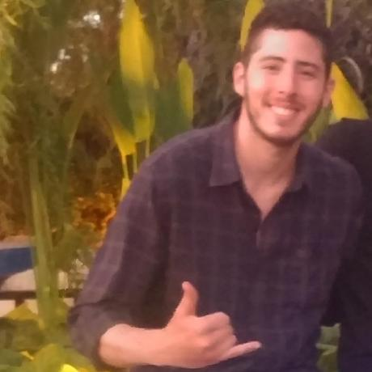

|  |
Tomer GuttmanThird-year computer science student at the Academic College of Tel-Aviv, Yaffo Highly motivated and dedicated computer science student, passionate to team up and excel, looking for a part-time / internship position in the field of software development.
|
Outstanding soldier award given by the chief on NAVY (Ram Rothberg)
Annual Independence Day Ceremony.
Excellence awards to outstanding soldiers in the year of 2014.
Volunteered at the Hebrew Scouts Movement in Israel
Guided a medium sized group of 6th Graders for a whole year, later on moved to Logistics.